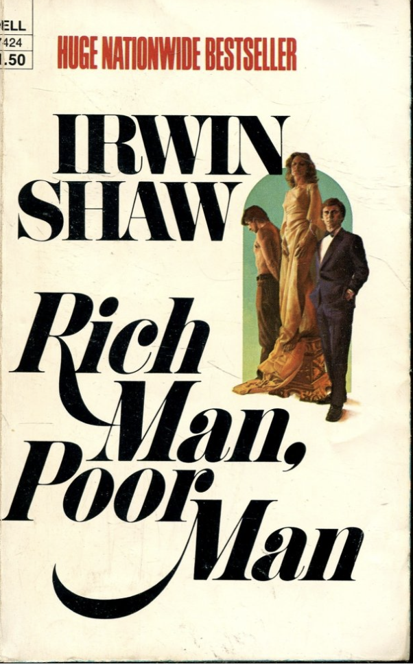

Em's Nonfiction Book Recommendations
The non-fiction book I recommend is a novel called Rich Man, Poor Man by Irwin Shaw. This novel is about two brothers from the end of World War II to the 1960's. The story of Rudolph, Gretchen, and Thomas Jordache, children of an embittered German immigrant. Nurtured on traditional views of American success, each pursues the illusion of happiness in his own way, determined to achieve his "birthright."
